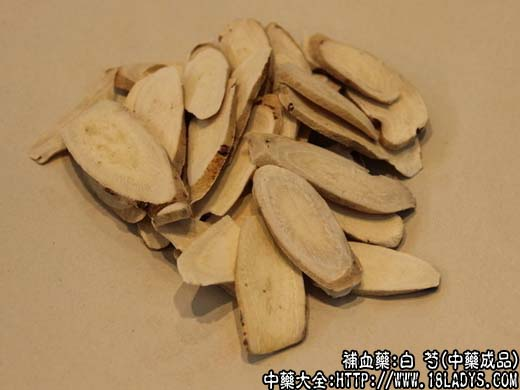

原文连接:https://www.daquan.com/post/2257.html


白芍为常用中药。始载《神农本草经》，列为上品，原名芍药。
别名：芍药、杭芍、毫芍、川芍。
来源：为毛茛科多年生草本植物芍药的干燥根。多为人工栽培。
产地：杭白芍，主产于浙江省东阳、临安、余姚等地。
毫白芍，主产于安徽省毫县、涡阳等地。
川白芍，主产于四川省中江、渠县、垫江等地。
此外湖南、山东、河南、河北、湖北、陕西、贵州、云南、甘肃等地均有生产。
性状鉴别：杭白芍：呈圆柱形长约10～20厘米，直径0.5～2.5厘米。表皮淡棕色，未去尽栓皮的部位棕褐色呈花斑状，较粗糙，有枝须根痕和纵皱，偶显横向皮孔。质坚体重，不不易折断，断面粉白色，显菊花孔。气无，味微苦酸。
以条粗壮，无枯芍、芦头、栓皮、霉变者为佳。
商品共分七等。产地习惯以成年人的拇指食指合拢为圆环（习称虎），围径约17厘米为定等衡量标准，以虎中的支数多少确定等级。
一等3～4支，二等5～6支，三等7～8支，四等9～11支，五等12～16支，六等17～21支，七等22支以下无细小稍尾。
毫白芍：圆柱形稍有弯曲，长8～15厘米，直径0.5～1.5厘米。表皮黄白色或淡粉黄色。不光润略显枝须根痕。质坚体重，断面淡黄色或淡粉色，显菊花纹。气无，味微苦酸。
以支条粗壮均匀，质坚体重，无枯、芦、霉变者为佳。
商品共分六等，以支条粗细长短衡量等级。
一等长在4.5厘米以上，直径在1.5厘米以上。二等长在4.5厘米以上，直径在1.2厘米以上。三等长在4.5厘米以上，直径在0.45厘米以上。五等长在4.5厘米以上，直径在0.3厘米以上。六等长短粗细不分，破碎节段不超过20%。
川白芍：略和毫芍相似，唯表皮粉红色，光滑无纵皱纹，皮孔和须根痕稍显下陷，质坚体重，断面淡粉色或淡黄白色，显菊花纹。气无，味微苦酸。分等情况与毫芍相同。
主要成分：含白芍素，即芍药甙，又含兴奋子宫的成分，此外尚含苯甲酸、β-固甾醇、鞣质、挥发油、脂肪油。
功效与作用：养血、缓急止痛，其作用为：
1、解痉镇痛。对实验家兔的离体肠管和大鼠在体胃子宫的平滑肌，有降低肌张力和抑制运动的作用。
2、镇静。芍药甙对中枢神经系统有抑制作用。
3、抗菌。对金黄色葡萄球菌、志贺氏痢疾杆菌有较显著的抑菌作用。
3、抗真菌。对腹股沟表皮癣菌等多种皮肤真菌，有不同程度的抑制作用。
此外，实验还初步证明，白芍能抑制胃液分泌，预防大鼠应激性溃疡病的发生；临床观察白芍还有止汗、利尿等作用。
炮制：横切三毫米片。分清炒、土炒、炒焦、醋炙、酒炙。
性味：苦、酸、微寒。
归经：入肝、脾、肺三经。
功能：补血敛阴，平肝止痛。
主治：头晕目眩，胸腹胁肋疼痛、四肢孪急、泻痢腹痛，虚汗不止，月经不调等症。
临床应用：主要用于柔肝止痛，养血补阴。
1、用于治疗腹痛，主要是肝旺脾弱、肝胃不和，肝气郁滞引起的腹痛（如溃疡病、肠胃炎时的肠胃痉孪痛，以及肝炎时的肝区疼痛等），白芍能解痉而缓和肝气之“刚悍，使之“柔和”而不引起疼痛，前人称这一作用为“柔肝”，有热者配柴胡清肝解郁，镇痛效果更好，方如四逆散。
对痢疾引起的腹痛和里急后重，用生白芍配木香、槟榔等以理气解痉，再加黄芩、川连等药加强抑菌作用以清热燥湿，方如芍药汤。
2、用于治疗月经不调、崩漏而有小腹不适或疼痛，取其有养血和镇痛作用，配当归、熟地等，对治疗经痛效果更好。临床上在治疗经痛的方剂中，白芍常不可少。
3、用于治疗由血虚引起的四肢肌肉痉孪抽搐，尤其小腿腓肌痉孪，能缓急解痉而镇痛，常配甘草同用，方如芍药甘草汤（实验证明，白芍和甘草的有效成分配合后，有相互增强的协同作用。）
4、用于治疗肝阴不足引起的眩晕、耳鸣等。前人称白芍为“养肝阴之主药”，广泛用于由肝阴不足引起的眩晕、耳鸣、眼花、肢体麻木、肌肉蠕动、舌质淡、脉弦细或弦劲（多见于慢性肝炎、贫血、高血压、动脉硬化），常配其他养阴补血药如麦冬、当归、熟地等，方如补肝汤。
5、用于热病后，阴液耗损、小便不利。白芍有利尿作用，故常用。又阴虚汗多者也可用白芍。
附：1、前人有谓产后忌用白芍（因产后宜温，而白芍味苦酸而微寒），但实际上，只要对证，白芍仍可用。例如产后积热，用张完素之芍药汤（白芍、茯苓、黄芩），产后肝火热盛用加味小柴胡汤（小柴胡汤加当归、白芍、栀子、龙胆草）；
2、当归、白芍配伍后，能加强补血养阴，在补气方剂中，如欲兼顾补血养阴，常加配当归、白芍，方如归芍六君汤、归芍异功散等。
用量：9～12g，利尿需重用。大剂可用至30～45g，但不宜长期大量服用。
处方举例：1、四逆散《伤寒论》：柴胡4.5g、白芍9g、枳实4.5g、炙甘草3g，水煎服。
2、芍药汤《伤寒论》：白芍18g、黄芩9g、川连4.5g、大黄6g（后下）、木香6g（后下）、槟榔6g、当归9g、肉桂1.5g（焗）、甘草3g，水煎服。
3、芍药甘草汤（张洁古）：白芍、甘草各12g，水煎服。
注：除上述三种白芍外，陕西省宝鸡地区在人工栽培白芍供应紧缺时，曾发展过野生白芍的生产，缓和了市场的情况。近几年来，全国各地大量引种白芍，现野生白芍商品少见。